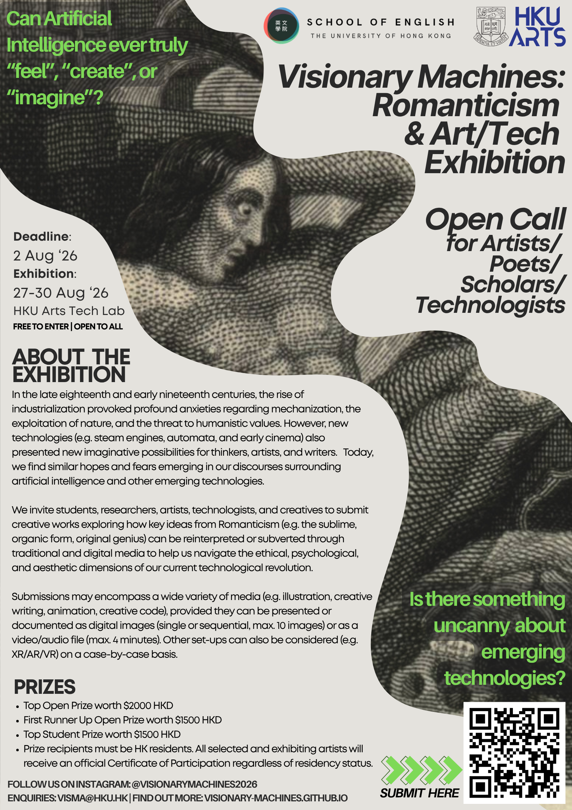
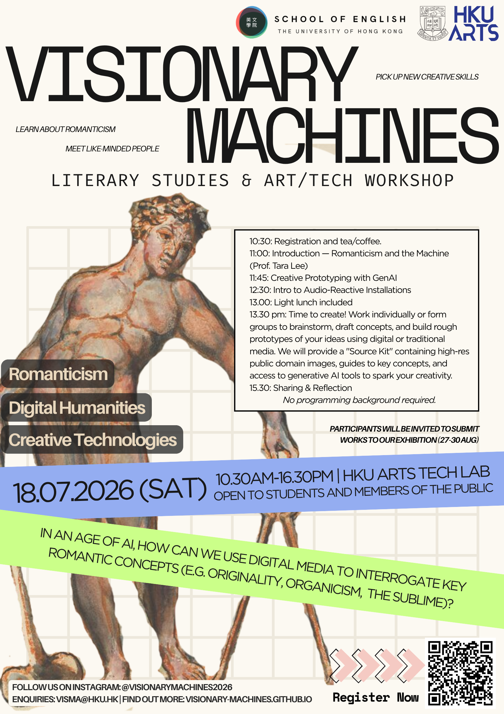

HKU School of English · Funded by HKRGC
Visionary
Machines:
Romanticism & Art/Tech Exhibition
A Provocation
About the Exhibition
Where Romanticism
meets the Machine.
Visionary Machines is an interdisciplinary public engagement project exploring the connections between Romanticism (a literary, artistic, and intellectual movement from the late 18th to the mid-19th century) and our contemporary moment. By showcasing the creative responses of students and artists, we aim to foster a greater understanding of Romanticism’s relevance to present-day concerns around the relationship between humans and technology.


Explore
our questions
Hover any card to turn it over — each provocation is framed by some ideas from critics.
Source Kit
Explore
our themes
Primary Texts
Nine 19th-century voices on art, nature, and the machine. Hover a card to turn it over; click to read the card in full.
Critical Theory
A non-exhaustive list of some critical texts that inform the exhibition.
The Visual Archive
Explore visual works relevant to the theme.
Unless otherwise specified, all visual works displayed are in the public domain.
PI: Dr. Tara Lee
Special thanks to our research assistants for their general and specific work on this project: Mao Xiyu (Web Development & Design), Anita Xiaoru Lu (Graphic Design), and Catherine Yu (Social Media).